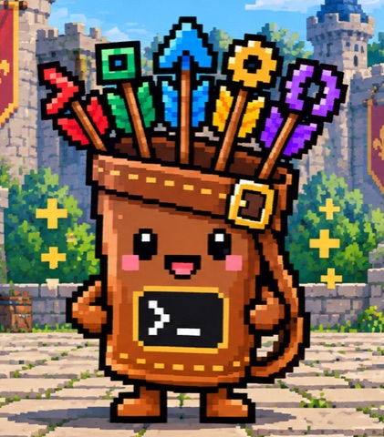

Home base for every coding agent you run.
Sessions, usage, limits, skills and MCP servers for Claude Code, Codex, Gemini CLI and the rest, in one place. From your terminal, your Mac or your phone.
You install quiver. You type swe.
Everything your agents scatter, in one place.
quiver reads each tool's own logs and configs, read-only, and shells out to the real binaries. Your agents stay exactly as they are.
Keep agents moving from your phone.
A small hub on your machine talks to the iOS and web app over your tailnet. No third party stores your transcripts.
- See which sessions are working, waiting or done
- Read the live transcript and send the next turn
- Check limits and usage away from your desk
Works with the agents you already use.
swe setup scans your machine and registers every agent it recognises.
Up and running in a minute.
The core CLI uses only the Python standard library. Nothing else gets installed.
Install with pipx (or Nix).
$ pipx install git+https://github.com/c-wenlong/quiver.gitRun setup. It finds your agents, providers, MCP servers and skills.
$ swe setupPick up where you left off, in any agent.
$ swe session -i
Questions
What is quiver?
A home base for the AI coding agents on your machine. It keeps a registry of them, lists and resumes their sessions, tracks usage, cost and limits, and keeps skills, MCP servers and AGENTS.md in sync. You use it from the swe command, the Mac app, or your phone.
Does it replace or wrap my agents?
No. quiver reads each tool's own logs and configs read-only, and swe use hands off to the real binary. Your agents keep working exactly as they do without it.
Where does my data go?
It stays on your machine, under ~/.quiver. The phone remote talks to a hub on your own machine over your Tailscale network, so no third party stores your transcripts.
Which agents does it support?
Session history covers 16 agents today, including Claude Code, Codex, Gemini CLI, Cursor CLI, opencode, Copilot, Droid and Devin. Any other CLI can be registered so swe can launch it.
What does it need?
Python 3.11 or newer for the CLI, with no other dependencies. The Mac app needs macOS 26 and bundles its own copy of swe.
Is it free?
Yes. quiver is open source under the MIT license.
Get quiver.
$ pipx install git+https://github.com/c-wenlong/quiver.git